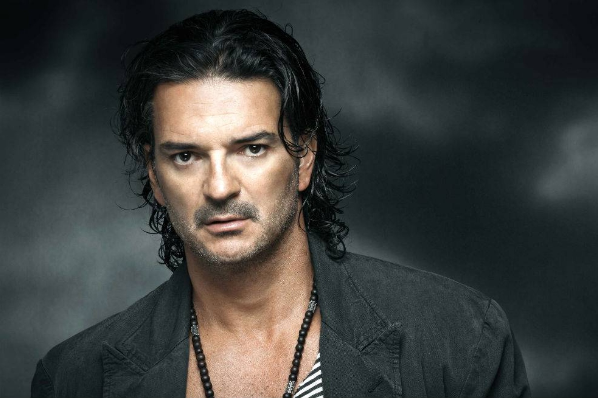

Hasta 2011, Arjona había publicado trece álbumes de estudio, un álbum en directo, nueve recopilaciones y cuarenta y tres sencillos. Cuatro de sus álbumes alcanzaron la primera posición en el Billboard Top Latin Albums en los Estados Unidos y diez alcanzaron la primera posición en Argentina. Cuatro álbumes ingresaron en el Billboard 200. Cuatro sencillos alcanzaron la primera posición en el Billboard Top Latin Songs y siete sencillos alcanzaron el puesto número uno en Billboard Latin Pop Songs. Su obra le valió numerosos premios y galardones, incluyendo un Grammy, un Grammy Latino, un premio «herencia latina»4 así como premios de la Sociedad Americana de Compositores, Autores y Editores, una antorcha de plata y de oro y dos gaviotas de plata del Festival Internacional de la Canción de Viña del Mar de 2010, dos premios de la Música Latina de 2010 y dos premios Orgullosamente Latino 2010. Es un gran admirador de poetas como Pablo Neruda y Gabriel García Márquez y cantautores como Silvio Rodríguez, Joan Manuel Serrat, Charly García y Joaquín Sabina, a este último dedicándole una carta incluida en el álbum Solo, en el año 2008.
| Como duele | Ver aquí..... |
| Don david | Ver aquí..... |
| Fuiste tú | Ver aquí..... |
| El taxista | Ver aquí..... |